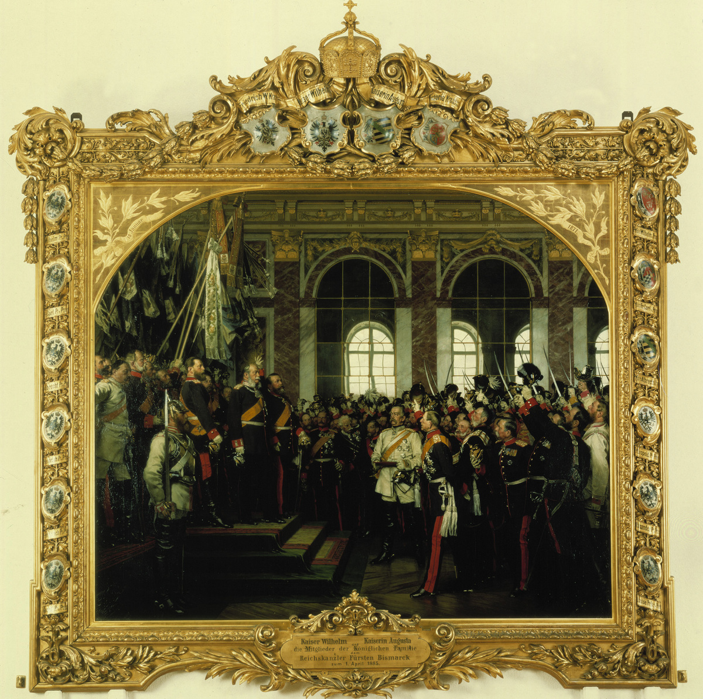
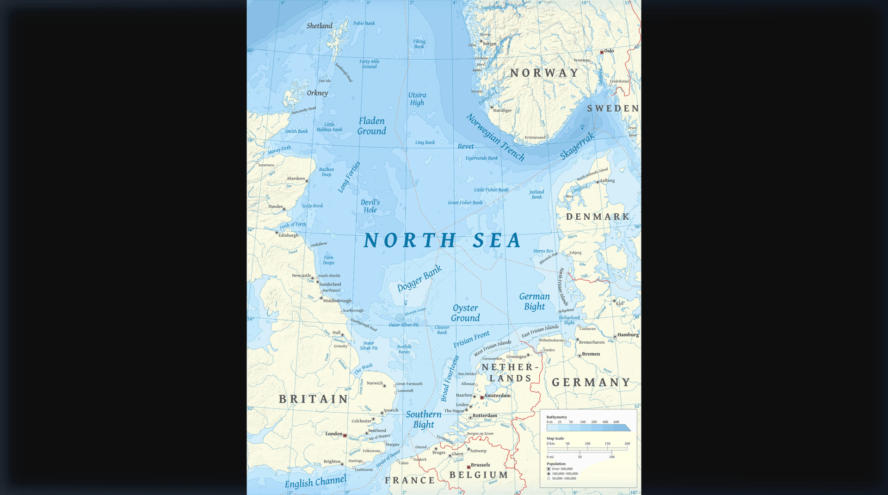
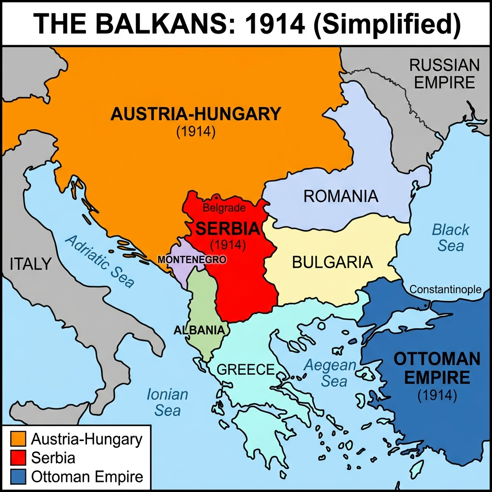

The Great War: Causes & Outbreak
Teacher Answer Key

Anton von Werner, 'The Opening of the Reichstag' (1893)
Key Enquiry Questions
- How did the Franco-Prussian War create a lasting legacy of hatred?
- To what extent did the 'Scramble for Africa' increase tension in Europe?
- Why did a battleship building contest destroy Anglo-German relations?
- Did the Alliance System protect Europe or guarantee a global war?
- Why did a single assassination in Sarajevo ignite a World War?
Name:
Class:
How did the Franco-Prussian War create a lasting legacy of hatred?
Q1. What are the two opposing figures doing in this 1871 painting by Anton von Werner, and why is this event significant?
Source A: Anton von Werner, 'The Proclamation of the German Empire at Versailles', painted in 1885.

What is this source showing? This painting depicts the official birth of the unified German Empire inside the Hall of Mirrors at the Palace of Versailles in 1871. France was defeated and forced to host this ceremony in its own royal palace. This created a deep, lasting feeling of humiliation and anger in France, leading to a desire for revenge (revanche) that would eventually help spark WWI.
Chronological Big Picture
1871: The Unification of Germany - The Franco-Prussian War
1897: Imperial Rivalries - The Place in the Sun speech
1906: The Naval Arms Race - The Launch of HMS Dreadnought
1907: Encirclement & Alliances - The Triple Entente System
June 1914: The Spark in Sarajevo - The Assassination of the Archduke
Qundefined. Looking at this long-term timeline, which factor do you think was the most dangerous necessary cause of the war?
Map A: Alsace-Lorraine Border Region (1871)

Simplified map showing Alsace-Lorraine on the border between France and the new German Empire.
Bismarck vs. Wilhelm: A Clash of Strategy
Following the crushing defeat of France in 1871, German Chancellor Otto von Bismarck understood that France would never forgive the loss of Alsace-Lorraine. His greatest fear was that France would form an alliance with another major European power"specifically Russia"which would force Germany to fight a devastating "two-front war" if conflict ever broke out.
To prevent this, Bismarck spent the next twenty years weaving a complex, dizzying web of alliances and secret treaties designed entirely to keep France diplomatically isolated. He formed the Triple Alliance with Austria-Hungary and Italy, and signed a secret Reinsurance Treaty with Russia. Bismarck's diplomatic genius lay in his ability to juggle these competing empires, ensuring that Germany always had more friends than enemies.
However, when a young, ambitious Kaiser Wilhelm II took the throne in 1888, he dismissed Bismarck and foolishly allowed the treaty with Russia to expire. Within years, Bismarck's nightmare became a reality: France and Russia signed a military alliance. The brilliant diplomatic safety net that Bismarck had built was gone, leaving Germany surrounded and forcing the German military to start planning for the exact scenario Bismarck had dreaded.
Q7. Evaluate how the change in leadership from Bismarck to Kaiser Wilhelm II fundamentally altered Germany's strategic position in Europe.
Bismarck's defensive web of alliances, specifically the Reinsurance Treaty with Russia, successfully isolated France and prevented a two-front war. Wilhelm II's aggressive ambition and dismissal of Bismarck led him to foolishly drop the Russian treaty, pushing Russia into an alliance with France. This completely destroyed Germany's diplomatic safety net, creating the exact 'encirclement' nightmare Bismarck had spent 20 years avoiding.
Historian's Corner: The 'Master Planner' Debate
Historians debate whether Bismarck was a genius 'master planner' who plotted the Franco-Prussian War years in advance, or merely a brilliant opportunist who reacted to events (like the Ems Telegram) as they happened. A.J.P. Taylor famously argued Bismarck just rode the wave of events.
To what extent did the 'Scramble for Africa' increase tension in Europe?
Q1. Look closely at the man standing over Africa. What is his posture suggesting about imperial ambitions?
Source A: John Tenniel, 'The Greedy Boy', a British political cartoon published in Punch Magazine, 1885.

What is this source showing? This British cartoon satirizes Germany's Chancellor Otto von Bismarck as a "greedy boy" grabbing slices of a pudding that represents colonial territories in Africa and New Guinea. This reflects British anxiety and suspicion about Germany's aggressive efforts to build a global empire, which threatened Britain's status as the world's leading power.
Do Now Activity
Qundefined. Who was the first Emperor of the newly unified Germany in 1871?
Kaiser Wilhelm I
Qundefined. Which brilliant Chancellor united the German states?
Otto von Bismarck
Qundefined. Which country was humiliatingly defeated in the Franco-Prussian War?
France
Qundefined. What strategic border territory did Germany take in 1871?
Alsace-Lorraine
Qundefined. What is the French word for their desire for revenge?
Revanche
Qundefined. Explain how Bismarck used the Ems Telegram to trap France into a war.
He edited the King's telegram to make it look like an insult to the French ambassador, forcing France to declare war out of pride.
Qundefined. Detail the two military advantages the Prussian army possessed.
Advanced railway networks for rapid mobilization and superior Krupp steel artillery.
Qundefined. Why was the location of the German Empire's proclamation so humiliating for France?
It took place in the Hall of Mirrors at the Palace of Versailles, the historic heart of French royalty.
Qundefined. Why did Bismarck weave a complex web of secret alliances after 1871?
To keep France diplomatically isolated so they could never find an ally to help them fight a revenge war.
Qundefined. What was Bismarck's ultimate nightmare scenario?
A two-front war against both France and Russia simultaneously.
Map A: Partition of Africa (1914)

Map B: The Global Imperial Lanes

The Gamble of Weltpolitik
In 1905, the Kaiser arrived in Tangier, Morocco, declaring his support for Moroccan independence against French influence. He expected the Entente Cordiale to fracture under pressure. Instead, the exact opposite happened: at the Algeciras Conference in 1906, Britain firmly backed France, leaving Germany diplomatically humiliated and isolated, supported only by Austria-Hungary.
The Kaiser repeated this dangerous gamble in 1911 (the Agadir Crisis) by sending the gunboat SMS Panther to the Moroccan coast. Once again, Britain stood by France, and the British navy was even placed on a war footing. Wilhelm’s clumsy attempts at 'gunboat diplomacy' completely backfired. Rather than breaking the Entente Cordiale, his aggression convinced Britain and France that Germany was an unpredictable threat, pushing the two nations into a much tighter military partnership.
Q6. Explain why Kaiser Wilhelm's strategy of testing the Entente Cordiale during the Moroccan Crises was a massive strategic failure for Germany.
Wilhelm II attempted to test and break the new Entente Cordiale by interfering in French-controlled Morocco. However, his aggressive posturing (such as sending a gunboat in 1911) backfired completely; it convinced Britain that Germany was a genuine military threat, driving Britain and France into a much closer, formal military alliance against Germany.
Historian's Corner: The Primat der Innenpolitik
Some historians (like Eckart Kehr) argue that Wilhelm II's aggressive Weltpolitik was actually driven by domestic politics. By creating foreign enemies, the Kaiser hoped to distract the German working class from voting for socialist parties at home.
Source A: A British political cartoon from 1897 showing Kaiser Wilhelm II.
“We do not want to put anyone in the shade, but we too demand our place in the sun.”
Source B: Speech by German Foreign Minister Bernhard von Bülow to the Reichstag, 1897.
Source Evaluation Notes
| Source |
N.O.P. (Nature, Origin, Purpose) |
Content (What it shows/says) |
Contextual Knowledge |
| A |
|
|
|
| B |
|
|
|
Final Written Evaluation
Source A is useful for showing the British perception of Weltpolitik; the cartoon's purpose is to mock Wilhelm II as greedy, demonstrating the growing tension between Britain and Germany. Source B is useful for understanding the German intent behind Weltpolitik; as a public speech to the Reichstag, its purpose is to rally domestic support for empire-building. Together they show how German ambition directly caused British anxiety.
Why did a battleship building contest destroy Anglo-German relations?
Q1. This blueprint represents the HMS Dreadnought. Why would this ship make all other navies obsolete?
Source A: Official technical blueprint showing the design and armament of HMS Dreadnought, published in 1906.

What is this source showing? This is a technical naval diagram of HMS Dreadnought, a revolutionary British battleship launched in 1906. It was so fast and heavily armed that it instantly made all existing warships in the world obsolete (useless). This triggered a frantic naval arms race between Britain and Germany, as both countries rushed to build as many Dreadnoughts as possible.
Do Now Activity
Qundefined. What was the name of Kaiser Wilhelm II's aggressive foreign policy?
Weltpolitik (World Policy)
Qundefined. Explain how Wilhelm II's actions during the Moroccan Crises backfired on Germany.
By aggressively interfering, he terrified Britain into forming a closer military alliance with France.
Qundefined. Why was the Franco-Russian Alliance a strategic disaster for Germany?
It destroyed Bismarck's diplomatic safety net and threatened Germany with a two-front war.
Qundefined. Evaluate how the 'Scramble for Africa' increased tensions in Europe.
It turned European empires into global rivals, causing constant friction and border disputes.
Qundefined. Describe the impact of Britain abandoning its policy of 'Splendid Isolation'.
Britain realized it could no longer defend its empire alone and sought European allies.
Qundefined. Evaluate the role of Wilhelm II's personality in destabilizing Europe.
His impulsive, aggressive nature alienated allies and destroyed Bismarck's careful diplomatic balance.
Qundefined. Who dismissed Otto von Bismarck in 1890?
Kaiser Wilhelm II
Qundefined. What strategic territory did Germany take from France in 1871?
Alsace-Lorraine
Qundefined. Why did Bismarck weave a complex web of secret alliances after 1871?
To keep France diplomatically isolated so they could never start a revenge war.
Qundefined. What was Bismarck's ultimate nightmare scenario?
A two-front war against both France and Russia simultaneously.
Map A: The North Sea & Naval Chokepoints

The Naval Race: A Self-Fulfilling Prophecy?
The HMS Dreadnought was a technological marvel. It was faster, heavily armored, and carried ten massive 12-inch guns, making every other battleship on earth instantly obsolete. While the Dreadnought was a triumph of British engineering, it contained a fatal strategic flaw: because all older ships were now worthless, Britain's massive head start in naval numbers was suddenly wiped out.
Germany recognized the opportunity immediately. The naval race was no longer about total ships, but about who could build the most 'Dreadnought-class' vessels. By revolutionizing naval warfare, Britain had essentially hit the reset button on the arms race, giving Germany a realistic chance to challenge British naval supremacy from scratch. The ensuing desperate scramble to build Dreadnoughts consumed the budgets and political rhetoric of both nations up until 1914.
Q8. How did the invention of the HMS Dreadnought ironically endanger British naval supremacy despite being a British invention?
The HMS Dreadnought was so technologically advanced—being faster, heavily armored, and armed exclusively with massive long-range guns—that it rendered all previous battleships obsolete. This effectively reset the naval arms race to zero, allowing Germany to start building Dreadnoughts on an equal footing with Britain.
Historian's Corner: The Anglo-German Antagonism
Paul Kennedy argues that the naval arms race was the single most decisive factor in turning Britain from a neutral observer into Germany's enemy, as the threat of a German navy fundamentally challenged Britain's core survival strategy.
Source A: Official technical blueprint of HMS Dreadnought, 1906.
“We want eight, and we won't wait!”
Source B: Popular British political slogan chanted by the public in 1909.
Source Evaluation Notes
| Source |
N.O.P. (Nature, Origin, Purpose) |
Content (What it shows/says) |
Contextual Knowledge |
| A |
|
|
|
| B |
|
|
|
Final Written Evaluation
Source A is useful for showing the technological leap that triggered the arms race; its origin as an official blueprint makes it highly reliable evidence of the ship's massive guns. Source B is highly useful for showing the psychological impact of the arms race on the British public; its purpose was to pressure the government to build more ships. Together, they show how technological advances fueled public panic.
Did the Alliance System protect Europe or guarantee a global war?
Q1. Study the intertwined hands and figures in this map. What does it suggest about how a local conflict might spread?
Source A: 'The Chain of Friendship', an American cartoon published in the Brooklyn Eagle, July 1914.

What is this source showing? This cartoon shows how the complex web of alliances dragged all the European powers into war. Serbia is threatened by Austria, who is threatened by Russia, who is threatened by Germany, and so on.
Do Now Activity
Qundefined. What revolutionary British battleship was launched in 1906?
HMS Dreadnought
Qundefined. What was the 'Two-Power Standard'?
A British policy stating their navy must be as large as the next two rival navies combined.
Qundefined. Why did Germany feel it needed a massive high seas fleet?
To protect their growing global trade and forcefully assert their status as a top-tier world power.
Qundefined. Explain how the invention of the Dreadnought ironically hurt British supremacy.
It rendered older ships obsolete, wiping out Britain's numerical lead and allowing Germany to compete from scratch.
Qundefined. What was the popular British slogan chanted by the public in 1909?
We want eight, and we won't wait!
Qundefined. Why did Britain feel their survival depended on massive naval supremacy?
As an island nation, Britain relied on the sea to import food and defend its global empire.
Qundefined. How did the Anglo-German naval race make war more likely?
It convinced Britain that Germany was an existential threat, cementing Britain's commitment to the Triple Entente.
Qundefined. What was the name of Kaiser Wilhelm II's aggressive foreign policy?
Weltpolitik (World Policy)
Qundefined. Explain how Wilhelm II's actions during the Moroccan Crises backfired on Germany.
By aggressively interfering, he terrified Britain into forming a closer military alliance with France.
Qundefined. Evaluate how the 'Scramble for Africa' increased tensions in Europe.
It turned European empires into global rivals, causing constant friction and border disputes.
Diagram A: The Alliance System (1914)

The complex web of treaties that dragged Europe into a global war.
Map A: European Military Alliance Blocs (1914)

The Powder Keg: Nationalism vs. Empire
This 'Blank Check' is one of the most debated actions in modern history. Some historians argue the Kaiser was acting out of impulsive loyalty to his murdered friend, not expecting the crisis to escalate beyond a localized Balkan war. They point to the fact that Wilhelm went on a sailing cruise immediately after giving the promise, suggesting he did not believe a global conflict was imminent.
However, other historians argue that the German High Command deliberately used the 'Blank Check' to push Austria into war. Knowing that Russia's military was rapidly modernizing and would soon be too powerful to defeat, German generals believed that if a European war was inevitable, it was better to fight it in 1914 rather than wait. By giving Austria unconditional support, Germany ensured the crisis would explode into a continental conflict.
Q7. Was the 'Blank Check' a reckless mistake by the Kaiser, or a calculated move by the German military to trigger a necessary war? Use historical reasoning to justify your stance.
While some historians claim the Kaiser acted impulsively out of grief, the evidence heavily suggests a calculated military gamble. The German High Command knew Russia was rapidly modernizing and would soon be too strong to defeat. By writing the 'Blank Check', Germany deliberately encouraged Austria to crush Serbia, knowing it would provoke Russia. They saw 1914 as their last best chance to win a preventative war against the Franco-Russian alliance before it was too late.
Historian's Corner: The 'Powder Keg' Inevitability
Was war inevitable in the Balkans? Richard Evans argues that the complex alliance system turned the Balkans into a doomsday machine, where any small conflict was mathematically guaranteed to drag all the Great Powers into a general war.

Source A: Map of the Balkans showing the expansion of Serbia after 1913.
“Serbia is a viper that must be crushed. If we do not destroy them now, our empire will be torn apart by Slavic nationalism.”
Source B: Diary entry of the Austro-Hungarian Chief of Staff, Conrad von Hötzendorf, 1913.
Source Evaluation Notes
| Source |
N.O.P. (Nature, Origin, Purpose) |
Content (What it shows/says) |
Contextual Knowledge |
| A |
|
|
|
| B |
|
|
|
Final Written Evaluation
Source A is useful because it visually demonstrates how Serbia nearly doubled in size after the Balkan Wars, making it a much larger physical threat. Source B is extremely useful because, as a private diary entry, it reveals the genuine panic and aggressive intentions of the Austro-Hungarian military command without political censorship. Together, they prove that Austria-Hungary felt an existential need to destroy Serbia.
Why did a single assassination in Sarajevo ignite a World War?
Q1. Look at the men sitting on the 'Balkan Troubles' pot. What are they desperately trying to prevent?
Source A: Leonard Raven-Hill, 'The Boiling Point', a British political cartoon published in Punch Magazine, 1912.

What is this source showing? This famous cartoon represents the Balkans region as a boiling pot of ethnic and nationalistic tensions. The leaders of the European Great Powers (Britain, Germany, France, Russia, Austria-Hungary) are shown sitting on the lid, struggling to prevent the pot from exploding into a major European war.
Do Now Activity
Qundefined. Which three countries made up the Triple Entente?
Great Britain, France, and Russia
Qundefined. Which three countries made up the Triple Alliance?
Germany, Austria-Hungary, and Italy
Qundefined. Explain the theoretical logic of how the alliance system was supposed to keep peace.
It was believed that the blocs were so heavily armed that attacking one would trigger an unwinnable global war, deterring aggression.
Qundefined. Why did the alliance system actually increase paranoia instead of security?
Nations felt trapped by their defensive commitments and constantly feared their rivals were plotting a sudden attack.
Qundefined. What military plan did Germany create to avoid a long two-front war?
The Schlieffen Plan
Qundefined. Which neutral country did the Schlieffen Plan require invading?
Belgium
Qundefined. What feeling of being surrounded by enemies haunted German planners?
Encirclement
Qundefined. What revolutionary British battleship was launched in 1906?
HMS Dreadnought
Qundefined. Explain how the invention of the Dreadnought ironically hurt British supremacy.
It rendered older ships obsolete, wiping out Britain's numerical lead and allowing Germany to compete from scratch.
Qundefined. How did the Anglo-German naval race make war more likely?
It convinced Britain that Germany was an existential threat, cementing Britain's commitment to the Triple Entente.
Diagram A: The July Crisis Domino Effect

How a single assassination in the Balkans escalated into a world war within a month.
Map A: The Balkan Peninsula (1914)
Simplified map of the highly unstable Balkan Peninsula in 1914.
Map B: Inset - Sarajevo, 28 June 1914: The Fatal Route

The July Crisis: Inevitable or Preventable?
Historian's Corner: The Fischer Controversy
In 1961, German historian Fritz Fischer shocked the world by arguing that Germany deliberately caused WWI to achieve world power status. He pointed to the 'Blank Cheque' as evidence that Germany actively pushed Austria into war, knowing it would provoke Russia.
Source A: 'The Boiling Point', a British cartoon published in Punch Magazine, 1912.
“You may rest assured that His Majesty will faithfully stand by Austria-Hungary, as is required by the obligations of his alliance and of his ancient friendship.”
Source B: The 'Blank Cheque' telegram sent from Germany to Austria-Hungary, 5 July 1914.
Source Evaluation Notes
| Source |
N.O.P. (Nature, Origin, Purpose) |
Content (What it shows/says) |
Contextual Knowledge |
| A |
|
|
|
| B |
|
|
|
Final Written Evaluation
Source A is useful for showing the long-term tension in the Balkans; its purpose is to warn the British public that the 'Great Powers' were struggling to keep the peace. Source B is crucial for understanding the short-term trigger; as an official diplomatic telegram, it proves that Germany gave Austria-Hungary unconditional support, which gave Austria the confidence to attack Serbia. Together, they explain why a regional crisis exploded into a world war.
End of Unit Quiz Pack
Instructions: Answer the 50 quick-fire recall questions below. If you get stuck, the scrambled answers are provided in the Answer Bank on the final page.
1. In what year did the Franco-Prussian War end?
2. Which wealthy region did Germany take from France in 1871?
3. What was the French desire for revenge called?
4. Who was the German Chancellor that unified Germany?
5. What was Bismarck's greatest strategic fear?
6. Which two countries did Bismarck fear would ally against Germany?
7. What was the secret 1887 agreement between Germany and Russia?
8. Which ambitious German Emperor dismissed Bismarck in 1890?
9. What was Wilhelm II's aggressive global policy called?
10. What previous policy of Bismarck's focused on European peace?
11. What agreement did Britain and France sign in 1904?
12. In which African country did Wilhelm provoke crises in 1905 and 1911?
13. What was the result of the First Moroccan (Tangier) Crisis?
14. What name was given to Germany's aggressive threat of military force?
15. What was the name of the German gunboat sent to Agadir in 1911?
16. What was the British policy requiring their navy to be larger than the next two combined?
17. What revolutionary British battleship was launched in 1906?
18. Why did the Dreadnought ironically threaten British supremacy?
19. What was Britain's traditional foreign policy of avoiding European alliances called?
20. What was German Admiral Tirpitz's naval strategy called?
21. What volatile region was known as the 'Powder Keg of Europe'?
22. What declining multi-ethnic empire dominated the northern Balkans?
23. Which empire was retreating from the Balkans, leaving a power vacuum?
24. Which nation wanted to unite all South Slavs into a 'Greater' nation?
25. Which region did Austria-Hungary formally annex in 1908?
26. Which major power considered itself the protector of the Slavic people?
27. Who was the heir to the Austro-Hungarian throne?
28. In which city was the Archduke assassinated?
29. On what date was the Archduke assassinated?
30. Who assassinated the Archduke?
31. What secret Serbian society did the assassin belong to?
32. What unconditional promise did Germany give Austria-Hungary in July 1914?
33. What is the month of diplomatic failures after the assassination called?
34. What did Austria-Hungary issue to Serbia on July 23?
35. Which country began mobilizing its army to protect Serbia?
36. What was the name of Germany's military strategy for a two-front war?
37. Which neutral country did Germany invade to attack France?
38. Which country declared war on Germany due to the invasion of Belgium?
39. What was the alliance of Germany, Austria-Hungary, and Italy called?
40. What was the alliance of Britain, France, and Russia called?
41. What treaty ended the First World War in 1919?
42. Which clause forced Germany to accept full responsibility for the war?
43. What is the term for a war launched to destroy a rising threat before it gets too strong?
44. Which historian famously argued Germany planned a war of aggression?
45. Which historian argued the nations blundered into war due to rigid alliances?
46. What was the 'quarantine line' of new states created after WWI called?
47. Name one new state created by the Treaty of Versailles.
48. What European power was completely dismantled by the peace treaties?
49. What ideological threat did the Allies want to separate from Germany after the war?
50. Which country did Germany invade on 3 August 1914?
Quiz Pack Answer Bank
1871 • A war on two fronts (Encirclement) • Alsace-Lorraine • An ultimatum • Archduke Franz Ferdinand • Article 231 (War Guilt Clause) • Belgium • Belgium • Bosnia • Britain • Britain and France grew closer, isolating Germany • Cordon Sanitaire • France and Russia • Fritz Fischer • Gavrilo Princip • Gunboat Diplomacy • HMS Dreadnought • It made all older ships obsolete, resetting the naval race • June 28, 1914 • Kaiser Wilhelm II • Margaret MacMillan • Morocco • Otto von Bismarck • Poland • Preventative War • Realpolitik • Revanche • Risk Theory • Russia • Russia • Sarajevo • Serbia • SMS Panther • Soviet Communism • Splendid Isolation • The 'Blank Check' • The Austro-Hungarian Empire • The Austro-Hungarian Empire • The Balkans • The Black Hand • The Entente Cordiale • The July Crisis • The Ottoman Empire • The Reinsurance Treaty • The Schlieffen Plan • The Treaty of Versailles • The Triple Alliance • The Triple Entente • The Two-Power Standard • Weltpolitik (World Policy)